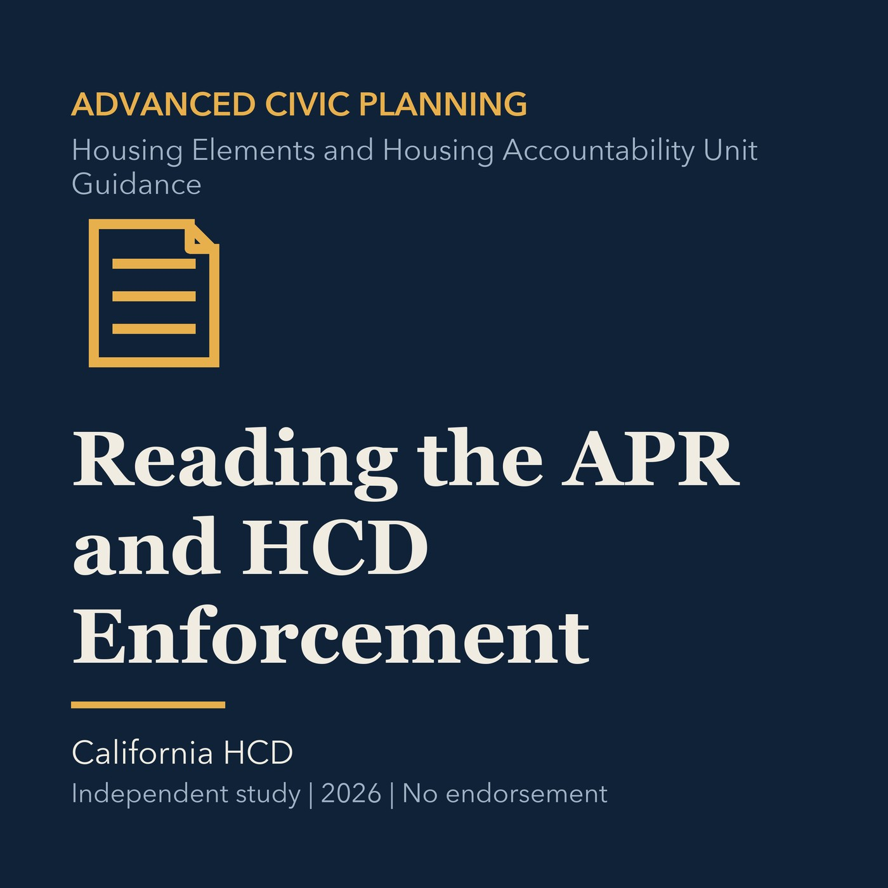

EPISODE 20
Reading the APR and HCD Enforcement
Uses annual progress reports and enforcement guidance to evaluate housing program delivery.

- Stable GUID
8b6bb4b3-5841-5751-a6b5-7eac705ca6b1- Release
- advanced-civic-planning-v2026.2
- SHA-256
755e19277c7e6e326bd121ebaf494d46554d1c6830b625813771416fc1324343